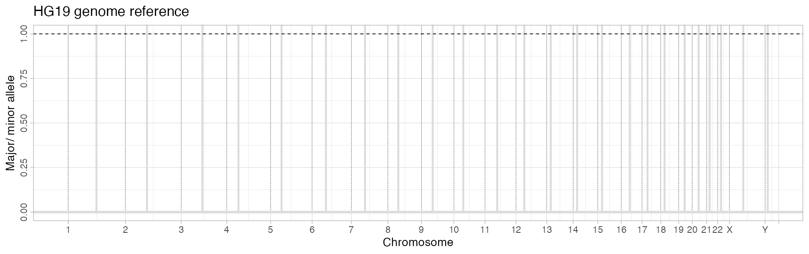

library(CNAqc)
#> ✔ Loading CNAqc, 'Copy Number Alteration quality check'. Support : <https://caravagn.github.io/CNAqc/>
require(dplyr)
#> Loading required package: dplyr
#>
#> Attaching package: 'dplyr'
#> The following objects are masked from 'package:stats':
#>
#> filter, lag
#> The following objects are masked from 'package:base':
#>
#> intersect, setdiff, setequal, unionCNAqc notation:
Major:minor denotes a CNA segments with
Major/minor copies of the major/minor allele.
We sometimes call "1:1" the karyotype or the copy state of
a segment.
Clonal denotes something (a CNA, or a mutaiton) that is found at clonality 100% or, so to say, in all tumour cells; subclonal is something that is found in a subset of the tumour cells.
CNAqc comes with a template dataset.
# Load template data
data('example_dataset_CNAqc', package = 'CNAqc')These fields are required for somatic mutations:
chr, from,
to.ref and
alt;DP (depth);NV (number of reads with variant);VAF, defined as
NV/DP.Chromosome names and alleles should be in character format;
chromosomes must be in the format chr1, chr2,
etc..
# Example input SNVs
example_dataset_CNAqc$mutations %>%
dplyr::select(chr, from, to, # Genomic coordinates
ref, alt, # Alleles (reference and alternative)
DP, NV, VAF # Read counts (depth, number of variant reads, tumour VAF)
) %>%
print()
#> # A tibble: 12,963 × 8
#> chr from to ref alt DP NV VAF
#> <chr> <dbl> <dbl> <chr> <chr> <dbl> <dbl> <dbl>
#> 1 chr1 1027104 1027105 T G 60 6 0.1
#> 2 chr1 2248588 2248589 A C 127 9 0.0709
#> 3 chr1 2461999 2462000 G A 156 65 0.417
#> 4 chr1 2727935 2727936 T C 180 90 0.5
#> 5 chr1 2763397 2763398 C T 183 61 0.333
#> 6 chr1 2768208 2768209 C T 203 130 0.640
#> 7 chr1 2935590 2935591 C T 228 132 0.579
#> 8 chr1 2980032 2980033 C T 196 85 0.434
#> 9 chr1 3387161 3387162 T G 124 6 0.0484
#> 10 chr1 3502517 3502518 G A 88 10 0.114
#> # … with 12,953 more rowsOptionally, you can annotate driver mutations by adding the following columns to your data:
is_driver: whether the mutation is a driver, or
not;driver_label: the label to be shown in the plots that
report also drivers (e.g., BRAF V600E could be a
label).
example_dataset_CNAqc$mutations %>%
dplyr::select(chr, from, to, ref, alt, is_driver, driver_label) %>%
filter(is_driver) %>%
print()
#> # A tibble: 3 × 7
#> chr from to ref alt is_driver driver_label
#> <chr> <dbl> <dbl> <chr> <chr> <lgl> <chr>
#> 1 chr2 179431633 179431634 C T TRUE TTN
#> 2 chr16 67646006 67646007 C T TRUE CTCF
#> 3 chr17 7577106 7577107 G C TRUE TP53CNAqc distinguishes between 3 types of copy number segments:
"1:0" loss of heterzygosity (LOH);"2:0" copy neutral LOH;"1:1" diploid heterozygous (assumed to be the normal
reference);"2:1" trisomy;"2:2" tetraploidy.These fields are required for all types of CNAs:
chr, from and
to;Major and minor;Optionally, you can annotate also subclonal CNAs.
To do this first you annotate the Cancer Cell Fraction (CCF)
CCF for each input segment as an extra column in the
dataframe: segments with CCF = 1 are clonal,
otherwise subclonal;
# Example input CNA
print(
example_dataset_CNAqc$cna %>%
select(
chr, from, to, # Genomic coordinates
Major, minor # Number of copies of major/ and minor allele (B-allele)
)
)
#> # A tibble: 267 × 5
#> chr from to Major minor
#> <chr> <int> <int> <dbl> <dbl>
#> 1 chr1 840009 1689987 3 2
#> 2 chr1 1689988 1815015 3 2
#> 3 chr1 1815016 9799969 3 2
#> 4 chr1 10479910 12079917 3 2
#> 5 chr1 12079917 12154980 3 2
#> 6 chr1 12154981 12839977 3 2
#> 7 chr1 13780016 17790026 3 2
#> 8 chr1 17849962 21080067 3 2
#> 9 chr1 21080068 21559998 3 2
#> 10 chr1 21559998 24830001 3 2
#> # … with 257 more rowsNote: the CCF of a segment can only be computed by callers that support subclonal segments. If there are no subclonal CNAs the
CCFcolumn can be omitted. In that case CNAqc assumes all segments to be clonal and assignsCCF = 1.
If you wish to use subclonal CNAs, further columns are required.
Major_2 and minor_2 reporting the major
and minor alleles for the second clone.The CNAqc model captures a mixture of two subclones, one with segment
Major:minor and CCF CCF (which is compulsory),
and another with segment Major_2:minor_2 and CCF
1 - CCF.
The values of Major_2 and minor_2 for
clonal segments (CCF = 1) can be NA and will
not be used.
Tumour purity, defined as the percentage of reads coming from tumour cells must be a value in \([0, 1]\).
# Example purity
print(example_dataset_CNAqc$purity)
#> [1] 0.89To use CNAqc, you need to initialize a
cnaqc S3 object with the initialisation function
init.
This function will check input formats, and will map mutations to CNA segments. This function does not subset the data and retains all and only the mutations that map on top of a CNA segment.
When you create a dataset it is required to explicit the reference genome for the assembly (see below).
# Use SNVs, CNAs and tumour purity (hg19 reference, see below)
x = init(
mutations = example_dataset_CNAqc$mutations,
cna = example_dataset_CNAqc$cna,
purity = example_dataset_CNAqc$purity,
ref = 'hg19'
)
#>
#> ── CNAqc - CNA Quality Check ───────────────────────────────────────────────────
#> ℹ Using reference genome coordinates for: hg19.
#> ✔ Found annotated driver mutations: TTN, CTCF, and TP53.
#> ✔ Fortified calls for 12963 somatic mutations: 12963 SNVs (100%) and 0 indels.
#> ! CNAs have no CCF, assuming clonal CNAs (CCF = 1).
#> ✔ Fortified CNAs for 267 segments: 267 clonal and 0 subclonal.
#> ✔ 12963 mutations mapped to clonal CNAs.The summary of x can be print to provide a
number of usefull information.
print(x)
#> ── [ CNAqc ] MySample 12963 mutations in 267 segments (267 clonal, 0 subclonal).
#>
#> ── Clonal CNAs
#>
#> 2:2 [n = 7478, L = 1483 Mb] ■■■■■■■■■■■■■■■■■■■■■■■■■■■ { CTCF }
#> 4:2 [n = 1893, L = 331 Mb] ■■■■■■■
#> 3:2 [n = 1625, L = 357 Mb] ■■■■■■
#> 2:1 [n = 1563, L = 420 Mb] ■■■■■■ { TTN }
#> 3:0 [n = 312, L = 137 Mb] ■
#> 2:0 [n = 81, L = 39 Mb] { TP53 }
#> 16:2 [n = 4, L = 0 Mb]
#> 25:2 [n = 2, L = 1 Mb]
#> 3:1 [n = 2, L = 1 Mb]
#> 106:1 [n = 1, L = 0 Mb]
#> ℹ Sample Purity: 89% ~ Ploidy: 4.
#> ℹ There are 3 annotated driver(s) mapped to clonal CNAs.
#> chr from to ref alt DP NV VAF driver_label is_driver
#> chr2 179431633 179431634 C T 117 77 0.6581197 TTN TRUE
#> chr16 67646006 67646007 C T 120 54 0.4500000 CTCF TRUE
#> chr17 7577106 7577107 G C 84 78 0.9285714 TP53 TRUEYou can subset randomly the data; if drivers are annotated, they can be forced to stay in.
y_5000 = subsample(x, N = 5000, keep_drivers = TRUE)
#>
#> ── CNAqc - CNA Quality Check ───────────────────────────────────────────────────
#> ℹ Using reference genome coordinates for: GRCh38.
#> ✔ Found annotated driver mutations: TTN, CTCF, and TP53.
#> ✔ Fortified calls for 5003 somatic mutations: 5003 SNVs (100%) and 0 indels.
#> ! CNAs have no CCF, assuming clonal CNAs (CCF = 1).
#> ✔ Fortified CNAs for 267 segments: 267 clonal and 0 subclonal.
#> Warning in map_mutations_to_clonal_segments(mutations, cna_clonal): [CNAqc] a
#> karyotype column is present in CNA calls, and will be overwritten
#> ✔ 5003 mutations mapped to clonal CNAs.
# 5000 + the ranomd entries that we sampled before
print(y_5000)
#> ── [ CNAqc ] MySample 5003 mutations in 267 segments (267 clonal, 0 subclonal).
#>
#> ── Clonal CNAs
#>
#> 2:2 [n = 2935, L = 1483 Mb] ■■■■■■■■■■■■■■■■■■■■■■■■■■■ { CTCF }
#> 4:2 [n = 728, L = 331 Mb] ■■■■■■■
#> 3:2 [n = 626, L = 357 Mb] ■■■■■■
#> 2:1 [n = 571, L = 420 Mb] ■■■■■ { TTN }
#> 3:0 [n = 103, L = 137 Mb] ■
#> 2:0 [n = 37, L = 39 Mb] { TP53 }
#> 25:2 [n = 2, L = 1 Mb]
#> 3:1 [n = 1, L = 1 Mb]
#> ℹ Sample Purity: 89% ~ Ploidy: 4.
#> ℹ There are 3 annotated driver(s) mapped to clonal CNAs.
#> chr from to ref alt DP NV VAF driver_label is_driver
#> chr2 179431633 179431634 C T 117 77 0.6581197 TTN TRUE
#> chr16 67646006 67646007 C T 120 54 0.4500000 CTCF TRUE
#> chr17 7577106 7577107 G C 84 78 0.9285714 TP53 TRUEYou can also subset data by karyotype of the segments, and by total copy number of the segment.
Both subset functions do not keep drivers that map off from the selected segments.
# Triploid and copy-neutral LOH segments
y_tripl_cnloh = subset_by_segment_karyotype(x, karyotypes = c('2:1', '2:0'))
#>
#> ── CNAqc - CNA Quality Check ───────────────────────────────────────────────────
#> ℹ Using reference genome coordinates for: hg19.
#> ✔ Found annotated driver mutations: TTN, CTCF, and TP53.
#> ✔ Fortified calls for 12963 somatic mutations: 12963 SNVs (100%) and 0 indels.
#> ! CNAs have no CCF, assuming clonal CNAs (CCF = 1).
#> ✔ Fortified CNAs for 58 segments: 58 clonal and 0 subclonal.
#> Warning in map_mutations_to_clonal_segments(mutations, cna_clonal): [CNAqc] a
#> karyotype column is present in CNA calls, and will be overwritten
#> ✔ 1644 mutations mapped to clonal CNAs.
#>
#> ┌ Driver(s): CTCF ─────────────────────────────────┐
#> │ │
#> │ Driver cannot be mapped - out of any segment! │
#> │ │
#> └───────────────────────────────────────────────────┘
print(y_tripl_cnloh)
#> ── [ CNAqc ] MySample 1644 mutations in 58 segments (58 clonal, 0 subclonal). Ge
#>
#> ── Clonal CNAs
#>
#> 2:1 [n = 1563, L = 420 Mb] ■■■■■■■■■■■■■■■■■■■■■■■■■■■ { TTN }
#> 2:0 [n = 81, L = 39 Mb] ■ { TP53 }
#> ℹ Sample Purity: 89% ~ Ploidy: 3.
#> ℹ There are 2 annotated driver(s) mapped to clonal CNAs.
#> chr from to ref alt DP NV VAF driver_label is_driver
#> chr2 179431633 179431634 C T 117 77 0.6581197 TTN TRUE
#> chr17 7577106 7577107 G C 84 78 0.9285714 TP53 TRUE
# Two and four copies
y_2_4 = subset_by_segment_totalcn(x, totalcn = c(2, 4))
#>
#> ── CNAqc - CNA Quality Check ───────────────────────────────────────────────────
#> ℹ Using reference genome coordinates for: hg19.
#> ✔ Found annotated driver mutations: TTN, CTCF, and TP53.
#> ✔ Fortified calls for 12963 somatic mutations: 12963 SNVs (100%) and 0 indels.
#> ✔ Fortified CNAs for 90 segments: 90 clonal and 0 subclonal.
#> Warning in map_mutations_to_clonal_segments(mutations, cna_clonal): [CNAqc] a
#> karyotype column is present in CNA calls, and will be overwritten
#> ✔ 7561 mutations mapped to clonal CNAs.
#>
#> ┌ Driver(s): TTN ──────────────────────────────────┐
#> │ │
#> │ Driver cannot be mapped - out of any segment! │
#> │ │
#> └───────────────────────────────────────────────────┘
print(y_2_4)
#> ── [ CNAqc ] MySample 7561 mutations in 90 segments (90 clonal, 0 subclonal). Ge
#>
#> ── Clonal CNAs
#>
#> 2:2 [n = 7478, L = 1483 Mb] ■■■■■■■■■■■■■■■■■■■■■■■■■■■ { CTCF }
#> 2:0 [n = 81, L = 39 Mb] { TP53 }
#> 3:1 [n = 2, L = 1 Mb]
#> ℹ Sample Purity: 89% ~ Ploidy: 4.
#> ℹ There are 2 annotated driver(s) mapped to clonal CNAs.
#> chr from to ref alt DP NV VAF driver_label is_driver
#> chr16 67646006 67646007 C T 120 54 0.4500000 CTCF TRUE
#> chr17 7577106 7577107 G C 84 78 0.9285714 TP53 TRUECNAqc uses a genome coordinates reference system to convert relative
relative to absolute coordinates, a step required to plot segments
across the whole genome (see plot_segments). For instance,
if a mutation maps to position \(100\)
of chromosome chr2, its absolute coordinate is \(100 + L\) where \(L\) is the length of chr1. The
reference system adopted by CNAqc needs therefore to report the length
of each chromosome, plus the information regarding the boundary of each
centromere.
CNAqc supports two coordinates reference genomes:
hg19 or GRCh37;hg38 or GRCh38 (default),for which two dataframes are stored inside the package.
CNAqc:::get_reference("hg19") # equivalent to CNAqc:::get_reference("GRCh37")
#> # A tibble: 24 × 6
#> chr length from to centromerStart centromerEnd
#> <chr> <int> <dbl> <dbl> <dbl> <dbl>
#> 1 chr1 249250621 0 249250621 121535434 124535434
#> 2 chr2 243199373 249250621 492449994 341576792 344576792
#> 3 chr3 198022430 492449994 690472424 582954848 585954848
#> 4 chr4 191154276 690472424 881626700 740132541 743132541
#> 5 chr5 180915260 881626700 1062541960 928032341 931032341
#> 6 chr6 171115067 1062541960 1233657027 1121372126 1124372126
#> 7 chr7 159138663 1233657027 1392795690 1291711358 1294711358
#> 8 chr8 146364022 1392795690 1539159712 1436634577 1439634577
#> 9 chr9 141213431 1539159712 1680373143 1586527391 1589527391
#> 10 chr10 135534747 1680373143 1815907890 1719628078 1722628078
#> # … with 14 more rows
CNAqc:::get_reference("GRCh38") # equivalent to CNAqc:::get_reference("hg38")
#> # A tibble: 24 × 6
#> chr length from to centromerStart centromerEnd
#> <chr> <dbl> <dbl> <dbl> <dbl> <dbl>
#> 1 chr1 248956422 0 248956422 122026459 124849229
#> 2 chr2 242193529 248956422 491149951 341144567 341144567
#> 3 chr3 198295559 491149951 689445510 581922409 582703370
#> 4 chr4 190214555 689445510 879660065 739157571 739157571
#> 5 chr5 181538259 879660065 1061198324 926145965 929381368
#> 6 chr6 170805979 1061198324 1232004303 1119752212 1119752212
#> 7 chr7 159345973 1232004303 1391350276 1290173956 1293382091
#> 8 chr8 145138636 1391350276 1536488912 1435384020 1435384020
#> 9 chr9 138394717 1536488912 1674883629 1579878547 1579878547
#> 10 chr10 133797422 1674883629 1808681051 1714570311 1716429449
#> # … with 14 more rowsThe reference genomes has to be specified when you create a CNAqc
object – see function init.
Note: mapping of mutations onto segments is independent of the reference genome, and it will work as far as both mutation and CNA segments are mapped to the same reference.
You can use a hidden function to plot a reference
CNAqc:::blank_genome(ref = 'hg19') +
ggplot2::labs(title = "HG19 genome reference")
CNAqc comes with an object released by PCAWG
CNAqc::example_PCAWG
#> ── [ CNAqc ] 293736 mutations in 667 segments (654 clonal, 13 subclonal). Genom
#>
#> ── Clonal CNAs
#>
#> 2:1 [n = 88422, L = 692 Mb] ■■■■■■■■■■■■■■■■■■■■■■■■■■■
#> 3:2 [n = 58384, L = 417 Mb] ■■■■■■■■■■■■■■■■■■ { BRAF }
#> 3:1 [n = 48704, L = 380 Mb] ■■■■■■■■■■■■■■■
#> 3:0 [n = 26622, L = 360 Mb] ■■■■■■■■ { CDKN2A }
#> 2:2 [n = 25290, L = 253 Mb] ■■■■■■■■
#> 3:3 [n = 16790, L = 115 Mb] ■■■■■
#> 2:0 [n = 5374, L = 67 Mb] ■■
#> 4:0 [n = 1752, L = 22 Mb] ■ { TP53 }
#> 4:2 [n = 1441, L = 11 Mb]
#> 1:1 [n = 855, L = 9 Mb]
#>
#> ── Subclonal CNAs (showing up to 10 segments)
#>
#> chr11@55700000 [n = 10468, L = 78.75 Mb] 2:1 (0.21) 2:2 (0.79) ■■■■■■■■■■
#> chr11@17365005 [n = 5389, L = 31.55 Mb] 2:1 (0.21) 2:2 (0.79) ■■■■■
#> chr11@5372292 [n = 1014, L = 11.99 Mb] 2:1 (0.21) 2:2 (0.79)
#> chr11@202253 [n = 610, L = 5.17 Mb] 2:1 (0.22) 2:2 (0.78)
#> chr11@48918601 [n = 542, L = 2.68 Mb] 2:1 (0.25) 2:2 (0.75)
#> chr6@82432583 [n = 301, L = 1.81 Mb] 2:1 (0.19) 2:2 (0.81)
#> chr11@51600000 [n = 290, L = 4.1 Mb] 2:1 (0.26) 2:2 (0.74)
#> chr6@81896364 [n = 69, L = 0.54 Mb] 2:1 (0.19) 2:2 (0.81)
#> chr6@93956180 [n = 41, L = 0.11 Mb] 2:1 (0.2) 2:2 (0.8)
#> chr8@42633277 [n = 13, L = 0.26 Mb] 2:1 (0.28) 2:2 (0.72)
#> ℹ Sample Purity: 73.4% ~ Ploidy: 3.
#> ℹ There are 3 annotated driver(s) mapped to clonal CNAs.
#> chr from to ref alt DP NV VAF driver_label is_driver
#> chr17 7577082 7577082 C T 78 70 0.8974359 TP53 TRUE
#> chr7 140453136 140453136 A T 95 54 0.5684211 BRAF TRUE
#> chr9 21971120 21971120 G A 23 14 0.6086957 CDKN2A TRUE
#>
#> ── PASS Peaks QC closest: 199%, λ = 0.0059. Purity correction: 1%. ───────────
#> ℹ 2:1 ~ n = 88422 ( 74%) → PASS 0.01 PASS -0.006
#> ℹ 2:2 ~ n = 25290 ( 21%) → PASS 0.01 PASS 0.002
#> ℹ 2:0 ~ n = 5374 ( 4%) → PASS 0.015 PASS -0.001
#> ℹ 1:1 ~ n = 855 (0.7%) → PASS -0.006
#> ℹ 1:0 ~ n = 124 (0.1%) → PASS 0.008
#>
#> ── General peak QC (154430 mutations): PASS 27 FAIL 13 - epsilon = 0.05. ───
#> ℹ 3:0 ~ n = 26622 ( 17%) → PASS 3 FAIL 0
#> ℹ 3:1 ~ n = 48704 ( 32%) → PASS 3 FAIL 0
#> ℹ 3:2 ~ n = 58384 ( 38%) → PASS 3 FAIL 0
#> ℹ 3:3 ~ n = 16790 ( 11%) → PASS 3 FAIL 0
#> ℹ 4:2 ~ n = 1441 ( 1%) → PASS 3 FAIL 1
#> ℹ 4:3 ~ n = 359 ( 0%) → PASS 3 FAIL 1
#> ℹ 5:3 ~ n = 132 ( 0%) → PASS 3 FAIL 2
#> ℹ 4:0 ~ n = 1752 ( 1%) → PASS 2 FAIL 2
#> ℹ 5:2 ~ n = 132 ( 0%) → PASS 2 FAIL 3
#> ℹ 6:3 ~ n = 114 ( 0%) → PASS 2 FAIL 4
#>
#> ── Subclonal peaks QC (7 segments, initial state 2:1): linear 5 branching 0 eith
#>
#> ── PASS Linear models
#> ℹ chr11@17365005 ~ (31.6Mb, n = 5389) 2:1 (21) + 2:2 (79) : A1B1 -> A1A2B1 -> A1A2B1B2 [100]
#> ℹ chr11@202253 ~ (5.2Mb, n = 610) 2:1 (22) + 2:2 (78) : A1B1 -> A1A2B1 -> A1A2B1B2 [100]
#> ℹ chr11@51600000 ~ (4.1Mb, n = 290) 2:1 (26) + 2:2 (74) : A1B1 -> A1A2B1 -> A1A2B1B2 [75]
#> ℹ chr11@5372292 ~ (12Mb, n = 1014) 2:1 (21) + 2:2 (79) : A1B1 -> A1A2B1 -> A1A2B1B2 [100]
#> ℹ chr11@55700000 ~ (78.8Mb, n = 10468) 2:1 (21) + 2:2 (79) : A1B1 -> A1A2B1 -> A1A2B1B2 [100]
#>
#> ── UNKNOWN Either branching or linear models
#> ℹ chr11@48918601 ~ (2.7Mb, n = 542) 2:1 (25) + 2:2 (75) : A1B1 -> A1A2B1 -> A1A2B1B2 [100]; A1B1 -> A1A2B1 | A1A2B1B2 [100]; A1B1 -> A1A2B1B2 -> A2B1B2 [100]
#> ℹ chr6@82432583 ~ (1.8Mb, n = 301) 2:1 (19) + 2:2 (81) : A1B1 -> A1A2B1 -> A1A2B1B2 [100]; A1B1 -> A1A2B1 | A1A2B1B2 [100]; A1B1 -> A1A2B1B2 -> A2B1B2 [100]
#> ✔ Cancer Cell Fraction (CCF) data available for karyotypes:1:0, 1:1, 2:0, 2:1, and 2:2.
#> ✔ PASS CCF via ENTROPY.
#> ✔ PASS CCF via ENTROPY.
#> ✔ PASS CCF via ENTROPY.
#> ✔ PASS CCF via ENTROPY.
#> ✔ PASS CCF via ENTROPY.